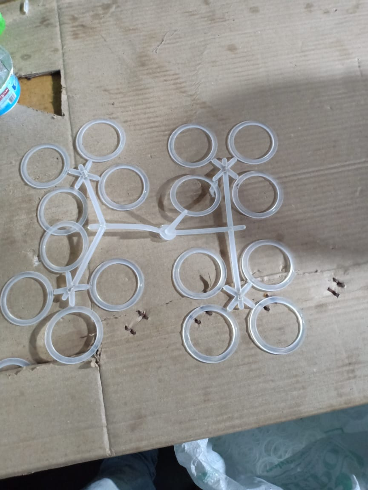
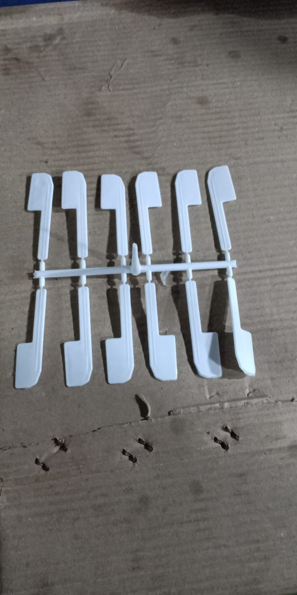
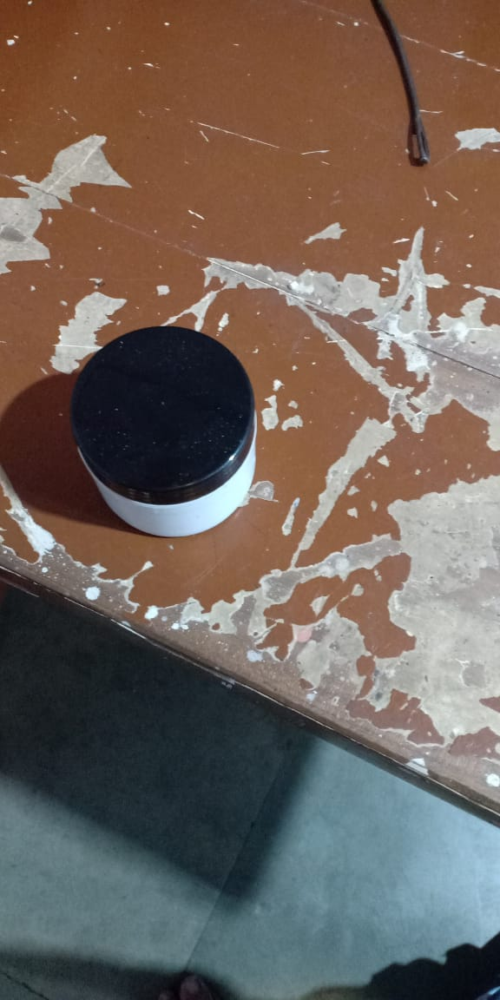

AMBIKA PLASTIC INDUSTRY

AMBIKA PLASTIC INDUSTRY |
|
 RING-RAINDOM MATERIA |
Plastic random packings are not as bulky as their ceramic equivalents and, therefore, offer higher capacity and lower pressure drop. From an engineering point of view, plastics are materials that will permanently deform when stress (force) is applied at common temperatures. |
||
 ICE-CREAM SPOON(PP) MATERIAL |
Do you have hard time to find the style or design disposable spoons for your shops or parties? Do you feel frustrated with the normal or similar plastic spoons that always put you down or make your food, cake, or ice cream looks bad? Just like every man or woman needs the other significant one to become a great couple. Your meal or dessert also deserve a great cutlery to become a perfect combination. Tair Chu provides a variety of design plastic disposable spoon to increase the visibility of your offers. You customers will be surprised at how your care your products from the outside package to the little accessories. Try our design plastic spoon to help you level up your meal. |
||
20mm RING(LD) MATERIAL |
Plumbing is any system that conveys fluids for a wide range of applications. Plumbing uses pipes, valves, plumbing fixtures, tanks, and other apparatuses to convey fluids.[1] Heating and cooling (HVAC), waste removal, and potable water delivery are among the most common uses for plumbing, but it is not limited to these applications.[2] The word derives from the Latin for lead, plumbum, as the first effective pipes used in the Roman era were lead pipes. In the developed world, plumbing infrastructure is critical to public health and sanitation.[4][5] Boilermakers and pipefitters are not plumbers, although they work with piping as part of their trade, but their work can include some plumbing. |
||
 COSMETIC CONTAINER |
A cosmetic container is a fully enclosed object used to contain, store, and transport cosmetics. Cosmetics or cosmetic products are substances intended to enhance or preserve the human body's physical appearance or scent. |